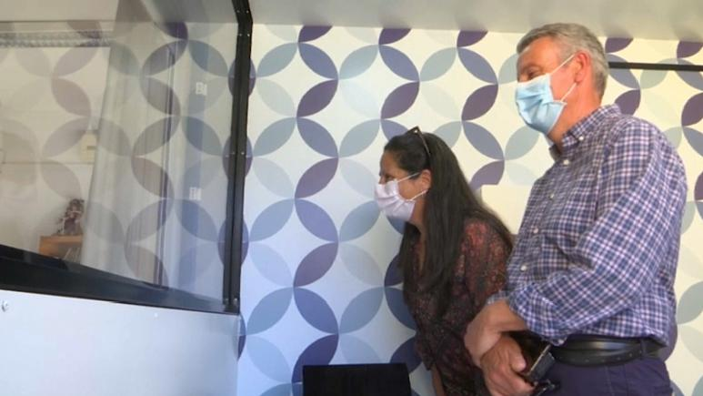

Portugal reunites elderly with loved ones thanks to protected room called the 'box of emotions'
19 May 2020, 12:00 PM

A care home in Portugal has created a special visiting room with a plexiglass screen that allows relatives to visit their loved ones amid the risk posed by the coronavirus pandemic.
It has been named the 'box of emotions'.
"We cannot touch them, there's no contact, but just the fact of being there and looking them in the eye is very positive," says Jose Navarro, son of one of the elderly that stay at the Montepio nursing home, near Lisbon.
According to Navarro, the past few months have been a painful experience for his father.
The elderly man lives with dementia and struggled to understand why his family, who used to visit him every day, stopped turning up. That made him very upset.
It was a very emotional moment when the 84-year-old man was finally reunited with his son on Monday - even though they could only see each other through a plexiglass divider.
84-year-old Jose Navarro reacts to his son visiting him againAP (screengrab)
"The message I want to convey to my father (is that) things are getting better, we are closer to each other and sooner or later it will all go back to normal.", says Navarro.
Pedro Santos, President of Montepio nursing home explained more on the "box of emotions":
"The distance that DGS (Directorate-General of Health) demands is around two metres. With the box of emotions we manage to have one centimetre."
"DGS says there can only be one visit per week, but because we have the box we manage to allow more, and some families come three times a week. As long as it's planned, organised, and prepared with the senior, and the box disinfected, we can allow for all visits."
Portugal began its second phase of lockdown easing on Monday (April 19), meaning that care homes across the country can now welcome visitors, as long as they follow strong distancing rules.
Some cafes and restaurants also reopened yesterday, alongside with nursery schools and schools for 16-18 year olds.
Social distancing, masks and temperature checks at entrances remain in place, though the government is gradually easing measures introduced to stem the spread of the new coronavirus.
Prime Minister Antonio Costa told reporters yesterday that “we can’t return to our old life as long as the virus is around” but noted that the economy has to come back to life.
So far, Portugal has recorded over 1,200 deaths and about 29,000 confirmed cases of COVID-19.